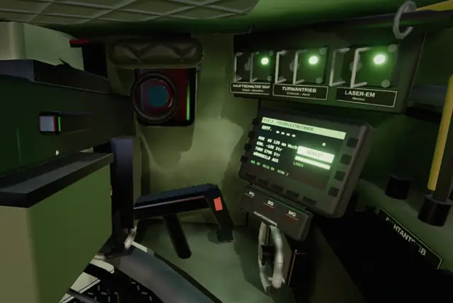
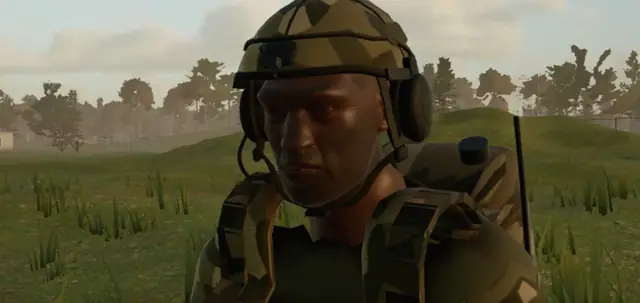
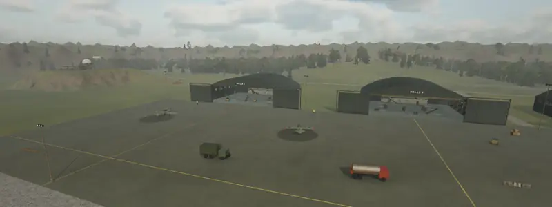
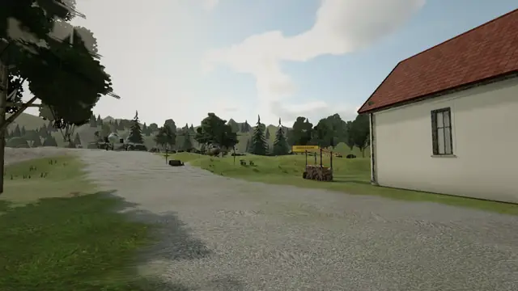
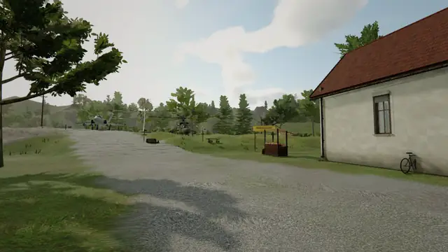

Dein Browser meldet kein WebGL. Das Spiel läuft hier vermutlich nicht.
§02 / NEU / Stand 20. November 2026
Was seit Oktober dazugekommen ist. Alle Bilder stammen direkt aus dem Spiel.
NEU.
Panzer mit echten Handgriffen, zwei Kampagnen, eine Simulation ohne HUD.

Modus Panzer · Simulation
Panzersimulation.
Du übernimmst einen von vier Plätzen: Fahrer, Richtschütze, Ladeschütze oder Kommandant. Den Rest macht die KI-Besatzung. Motor anlassen, Gang einlegen, Waffe scharf schalten, laden, entsichern, Ziel ansprechen: Jeder Handgriff passiert an einem echten Bedienelement im Innenraum. Wucht, Hohlladung, Spreng und Kanister wirken nach Panzerung und Auftreffwinkel.
Führung wählbar: Tutorial zeigt den nächsten Handgriff, Hilfe nur auf Taste I, Aus lässt dich frei machen. Wer nur fahren und schießen will, nimmt Arcade.
Herbst im Tal der Miren. Mit „Falke 2“ und deiner Besatzung brichst du durch Sperrlinien, hältst eine Höhe, sicherst Nachschub und kämpfst bei Nacht mit Wärmebild. Eine Mission spielt achtzig Jahre früher in einem alten Panzer.
Drei Wochen Waffenruhe, und jemand will sie brechen. Zwischensequenzen mit deutscher Lippensynchronisation, Checkpoints, gespeicherter Fortschritt. Akt III endet offen, weitere Kapitel folgen.
Kein HUD, kein Fadenkreuz. Magazine zählen einzeln, halbleere bleiben halbleer. Du lädst durch, sicherst, behebst Ladehemmungen und stellst das Visier auf die Entfernung ein. Treffer verwunden einzelne Körperteile, Blutungen stillst du mit Verband oder Abbinden, und wer zu viel Blut verliert, wird bewusstlos.
Zu finden in der Lobby unter Spielstil → Simulation (in Team-Deathmatch, Herrschaft, Jeder gegen jeden, Stellung, Eroberung, Abschuss bestätigt und der Kampagne).
Einschusslöcher je Kaliber, Querschläger und Durchschüsse. Dauerfeuer frisst sich durch Wände, Sprengungen reißen begehbare Breschen mit gebrochenen Rändern, Ruß und Staub. Türen fallen aus zerschossenen Scharnieren, Bäume kippen, Panzer schieben Gebäude ein.

Menschen
Gesichter, Körper, Hände.
Ein anatomischer Kopf auf Basis des freien MakeHuman-Grundnetzes mit Mimik, Lidern und Kiefer. Dazu Plattenträger mit Taschen, Helme über der gemessenen Kopfform, zivile Kleidung für die Kampagne und neue Handschuh-Hände in der Ich-Sicht.

Karten · Fotoscan-Texturen
Mehr Welt.
Zwei neue Großkarten, Flugplatz und Stadtkern, Relief auf allen großen Karten und viel Kleinkram auf den Straßen. 82 Materialien sind echte Fotoscans von Poly Haven (frei, CC0), auf Ultra in doppelter Auflösung.
Der Controller, mit dem du gerade spielst, wird erkannt, die Symbole passen sich an (Xbox, PlayStation, Nintendo). Der TV-Modus vergrößert Schrift und Bedienflächen für den Abstand zum Fernseher.
Magazin auswerfen, ein neues aus der Gürteltasche holen, einsetzen, durchladen. Das Zielfernrohr zeigt ein echtes vergrößertes Bild, Granaten greifst du an der Brust, die Waffen stecken im Holster an Rücken und Hüfte. Fortbewegung per Stick oder Teleport.
PC-App für Windows und Linux, Android-App, und auf dem iPhone als Web-App über den Home-Bildschirm. Im Mehrspieler treffen sich bis zu 32 Spieler mit einem Raumcode, egal ob Browser, Handy, VR-Brille oder PC-App. Einzige Bedingung: alle haben dieselbe Spielfassung.
Gleiche Stelle, gleiche Kamera, einmal vor und einmal nach einer Überarbeitungsrunde im November. Schieb den Regler.


VorherNachherWaldrand im Grenzland, Grafikstufe Hoch: vor und nach der Überarbeitung der Bäume (14. November).
§03 / KAMPAGNE / Zwei Geschichten
Alle Namen, Länder und Einheiten sind frei erfunden. Ernst, ohne Verherrlichung.
KAMPAGNE.
Eine zu Fuß. Eine im Turm.
Stille Grenze · Infanterie · 16 Missionen
Im Grenztal von Sant Aurel hält die Waffenruhe zwischen Nordkorps und Ostbund seit drei Wochen. Dann verstummt das Funkrelais, und Feldwebel Lenz und sein Trupp stoßen auf einen Plan, der beide Seiten zurück in den Krieg treiben soll. Akt I „Waffenruhe“, Akt II „Feuer im Tal“, Akt III „Phase zwei“.
Eisenwind · Panzer · 6 Einsätze
Herbst im Tal der Miren: Korvanische Panzer überschreiten die Grenze. Mit „Falke 2“ und deiner Besatzung brichst du durch Sperrlinien, hältst eine Höhe, geleitest Nachschub und schlägst bei Nacht zu.
Die Werte kommen direkt aus dem Spiel. Umstellen kannst du jederzeit in der Lobby.
SIMULATION.
Wie viel nimmt dir das Spiel ab?
Spielstile im Vergleich
Arcade
Realistisch
Simulation
Anzeige
volles HUD
reduziert
kein HUD
Fadenkreuz
an
nach Einstellung
nie
Gegner auf der Minikarte
ja
nein
nein
Schaden durch Kugeln
×1
×1,5
×1,5
Magazine, Durchladen, Ladehemmung
nein
nein
ja
BESATZUNG.
Im Panzer-Modus sitzt du auf einem Platz. Wähle ihn und sieh, was du dort selbst tust.
Fahrer
Hauptschalter (Batterie, Innenlicht) ein
Anlasser: Motor startet nach rund zwei Sekunden
Feststellbremse lösen
Wahlhebel bzw. Gang einlegen, im Weltkriegspanzer per Mausrad
fährt auf Befehl: vor, halt, links, rechts, zurück, Deckung
Richtschütze
Hauptschalter Waffe: scharf
Turmantrieb an (sonst Handräder, 6° pro Sekunde)
Munition am Rechner wählen
Entfernung mit dem Laser messen
schießt auf „Feuer!“ des Kommandanten
Ladeschütze
Granate aus Gestell oder Bunker greifen
einschieben, Verschluss schließen
entsichern und „geladen!“ melden
die befohlene Munitionsart laden
Kommandant
Luke auf und zu
Ziel ansprechen: „Richtschütze – Panzer – halbrechts – 800 – Wucht – Feuer!“
Fahrbefehle und Munitionsbefehle
Lagemeldung über das Funkgerät
§05 / MODI / Regelwerk
MODI.
12 Modi. Ein Fadenkreuz.
Team-Deathmatch
TDM · 6 GEGEN 6 · 40 ABSCHÜSSE · 10 MIN
Sechs gegen sechs. Wer zuerst 40 erreicht, gewinnt.
Herrschaft
DOM · 6 GEGEN 6 · 150 PUNKTE · 10 MIN
Drei Flaggen. Halte zwei, und die Uhr arbeitet für dich.
Jeder gegen jeden
FFA · 8 SPIELER · 25 ABSCHÜSSE · 10 MIN
Acht Spieler. Keine Freunde. 25 Abschüsse.
Waffenspiel
GUN · 8 SPIELER · 18 STUFEN · 10 MIN
18 Stufen, ein Messer. Jeder Abschuss lädt nach.
Schießstand
TRN · KEIN LIMIT
Kein Druck, kein Limit. Nur du, die Ziele und jedes Fahrzeug.
SERIEN.
Serienprämien
Abschüsse ohne Tod schalten frei, was über dir kreist.
4 — Aufklärer.
5 — FPV-Drohne.
6 — Präzisionsschlag.
8 — Wachgeschütz.
4 Abschüsse
Eine Drohne kreist über der Karte und zeigt 30 Sekunden lang alle Gegner auf der Minikarte.
5 Abschüsse
Du steuerst eine kleine Kamikaze-Drohne aus der Ich-Sicht: Feuern sprengt sie, Interagieren bricht ab. Dein Körper bleibt so lange stehen und ist verwundbar.
6 Abschüsse
Markiere einen Punkt auf der Karte, Sekunden später schlagen drei Raketen in einer Linie ein.
8 Abschüsse
Ein automatisches Geschütz bewacht 45 Sekunden lang deine Position.
§06 / KARTEN / Sichtlinien-Satz
Bewege dich durch den Plan. Was du siehst, steht fett.
KARTEN.
Miss zweimal. Schieß einmal.
Hafen
Containerlabyrinth, Portalkran und Lagerhalle bei klarem Nachmittagslicht.
Altstadt
Mediterrane Gassen, Markt und Dachterrassen in der Mittagssonne.
Werk
Industriehalle mit Laufstegen, Pressen und Lkw-Hof bei Tageslicht.
Schießstand
Trainingsanlage mit Klappzielen von 10 bis 100 Metern – und drumherum ein Übungsgelände mit allen Fahrzeugen, Fahrstrecke, Panzerschießbahn bis 2500 Metern und Flugfeld.
§07 / ARSENAL / Schriftmusterbuch
Breite ist Reichweite. Stärke ist Schaden.
ARSENAL.
Jede Waffe hat ihren eigenen Schnitt.
KV-47
M-17 Falke
VP-9 Viper
QX-90
HM-60 Hammer
SK-14
Brecher .338
Bulldog 12
P-9 Kompakt
Adler .50
Kampfmesser
§08 / PROFIL / Dein Schnitt
PROFIL.
Dein Schnitt, gesetzt aus deinen Treffern.
Noch kein Einsatz. Dein Schnitt ist ungeschrieben.
§09 / EINSTELLUNGEN / Setzkasten
EINSTELLUNGEN.
Gilt für Website und Spiel.
Die Einstellungen brauchen JavaScript.
§10 / STEUERUNG / Belegung
STEUERUNG.
Drück eine Taste. Sie verrät, was sie tut.
Tastatur und Maus
W A S D
Bewegen
Maus
Umsehen
LMT
Feuern
RMT
Zielen (halten)
R
Nachladen
Leertaste
Springen, Überklettern
C
Ducken, im Sprint rutschen
Y
Hinlegen
Umschalt
Sprinten, im Zielfernrohr Atem anhalten
Q / E
Nach links / rechts lehnen
V / Maus 4
Nahkampf
G
Granate (halten: vorkochen)
X
Taktische Granate
1 / 2 / Mausrad / Maus 5
Waffe wechseln
M
Feuermodus
T
Lampe / Laser
N
Verband
3 / 4 / 5 / 6
Serienprämien
F
Interagieren, einsteigen
Tab
Punktetabelle
Esc
Pause
§11 / APP / Herunterladen
Kostenlos. Kein Konto. Alle spielen zusammen.
APP.
Browser, Handy, PC-App und VR. Ein Spiel, ein Raum.
PC-App · Windows & Linux
Das volle Spiel als Programm: Grafikstufe Extrem, größere Massenschlachten, alle Texturen und Modelle lokal (kein Nachladen), eigener Speicher nur fürs Spiel, Host läuft im Hintergrund weiter.
Nur in der App: Riesenkarte „Weitmark“. 1600 × 1600 m – viermal so groß wie die bisher größte Karte, mit Kleinstadt am Fluss, zwei Dörfern, Industrie, Hügelkette und Flugfeld. Spielbar in der PC-App und in der Android-App; im Browser, im Handy-Browser und im VR-Browser ist sie gesperrt. VR auf der Riesenkarte: PC-App mit PC-VR (SteamVR, Quest Link).
Nicht signiert: Windows zeigt beim ersten Start „Der Computer wurde durch Windows geschützt“ → Weitere Informationen → Trotzdem ausführen. Alle Versionen
Im Browser installieren · leicht
Die Webseite als App-Fenster mit eigenem Symbol, auf PC (Chrome, Edge), Android und iPhone. Kein Download vorab, startet schnell, aktualisiert sich selbst, spielt nach dem ersten Mal auch offline.
Handy & Tablet
Android: oben „Als App installieren“ (empfohlen) oder die Android-App: NULLPUNKT-android.apk. Beim APK fragt Android nach „Unbekannte Apps installieren“ – für deinen Browser einmal erlauben.
iPhone & iPad: in Safari Teilen → Zum Home-Bildschirm. Eine App-Store-Fassung gibt es nicht.
VR (Beta)
Meta Quest: diese Seite im Quest-Browser öffnen (gern über „Installieren“ als App), im Spiel unter Einstellungen → Steuerung → VR einschalten. PC-VR: Brille per Link/Air Link oder SteamVR verbinden und die Seite in Chrome oder Edge öffnen.
Web-App oder PC-App?
Browser / Web-App
PC-App
Kosten, Konto
kostenlos, keins
kostenlos, keins
Download
nichts vorab, Grafik lädt beim Spielen
einmal ca. 280 MB, danach alles lokal
Grafik
Niedrig bis Ultra
zusätzlich Extrem, Massenschlacht bis 400 je Seite
Riesenkarte „Weitmark“
gesperrt (auch Handy- und VR-Browser)
spielbar – ebenso in der Android-App
Updates
automatisch
neue Version installieren (die App sagt Bescheid)
Mehrspieler
zusammen in denselben Räumen – Browser, Handy, VR und PC-App, sofern alle dieselbe Spielfassung haben
Läuft auf …
Gerät
So spielst du
Ehrlich gesagt
Windows- & Linux-PC
Browser (Chrome, Edge, Firefox) oder PC-App
Läuft am besten mit eigener Grafikkarte. Mit einfacher Onboard-Grafik startet das Spiel auf „Niedrig“.
Mac
Browser, in Safari auch als Web-App (Ablage → Zum Dock hinzufügen)
Keine eigene Mac-App.
Android
Browser, Web-App oder Android-App (APK)
Quer halten, Touch-Steuerung oder Controller. Ältere Handys bleiben auf „Niedrig“.
iPhone & iPad
Safari, als Web-App über den Home-Bildschirm
Keine App-Store-Fassung.
Meta Quest
Quest-Browser, VR-Modus in den Einstellungen
VR ist Beta. Auf der Brille startet eine eigene, leichtere Grafikvorgabe.
Konsole, Steam Deck, Fernseher
Browser des Geräts mit Controller, TV-Modus schaltet sich ein
Wird erkannt, ist aber keine offizielle Plattform. Ob es flüssig läuft, entscheidet der Browser des Geräts.
Mindestens nötig
Ein aktueller Browser mit WebGL 2 und eingeschalteter Hardwarebeschleunigung.
Die Grafikstufe wählt das Spiel beim ersten Start selbst (kurzer Grafiktest) und lernt aus den ersten Runden. Ändern kannst du sie jederzeit.
Für den Mehrspieler eine normale Internetverbindung. Offline läuft alles, was du schon einmal geladen hast.
§12 / FRAGEN / Kurz beantwortet
FRAGEN.
Was oft gefragt wird.
Kostet NULLPUNKT etwas?
Nein. Kein Kauf, kein Abo, keine Werbung, kein Konto. Freischalten geht nur durch Spielen.
Muss ich etwas herunterladen?
Nein, der Browser reicht. Wer möchte, installiert die Seite als Web-App oder nimmt die PC-App bzw. die Android-App aus dem Bereich App.
Läuft das auf meinem Handy?
Auf den meisten aktuellen Handys ja, auf der Grafikstufe „Niedrig“ oder „Mittel“. Das Handy quer halten. Nötig ist ein Browser mit WebGL 2. Die Übersicht steht unter Läuft auf ….
Wie spiele ich mit Freunden?
Im Spiel auf „Mehrspieler“, einen Raum öffnen und den Raumcode oder den Einladungslink teilen. Bis zu 32 Spieler, Bots füllen freie Plätze auf. Die Geräte verbinden sich direkt miteinander, einen eigenen Spielserver gibt es nicht. Alle brauchen dieselbe Spielfassung.
Wo fange ich an?
Mit der Grundausbildung, Mission 0 der Kampagne „Stille Grenze“. Sie erklärt Bewegung, Waffen und Fahrzeuge auf dem Schießstand. Danach Team-Deathmatch gegen Bots oder direkt die Kampagne.
Was ist der Unterschied zwischen Arcade, Realistisch und Simulation?
Arcade zeigt dir alles und heilt schnell. Realistisch blendet Gegner und fast das ganze HUD aus und macht Treffer tödlicher. Simulation geht noch weiter: Magazine, Durchladen, Ladehemmungen, Verwundungen, kein HUD. Der Vergleich steht unter Simulation.
Es ruckelt. Was kann ich tun?
Grafikstufe in den Einstellungen eine Stufe senken, im Browser die Hardwarebeschleunigung einschalten und andere Tabs schließen. Auf schwachen Rechnern hilft „Niedrig“ am meisten. Die PC-App lädt nichts nach und ist auf dem Rechner meist am flüssigsten.
Wo wird mein Fortschritt gespeichert?
Nur in deinem Browser auf diesem Gerät. Ein anderes Gerät oder gelöschte Browserdaten bedeuten einen neuen Spielstand. Details unter Datenschutz.
Ich habe einen Fehler gefunden.
Ab 20 Minuten Spielzeit gibt es im Spiel und unten auf dieser Seite ein Feedback-Formular. Sonst über die Kontaktangaben bei Kontakt & Rechte.
§13 / ÜBER / Kontakt, Rechte, Nutzung & Datenschutz
ÜBER.
NULLPUNKT ist ein Ego-Shooter, der vollständig in deinem Browser läuft. Du spielst gegen Bots oder online mit anderen Spielern.
Kein Tracking.Keine persönlichen Daten.Nur dein Spielstand.
Datenschutz
NULLPUNKT speichert keine persönlichen Daten: keinen echten Namen, keine E-Mail-Adresse, keine Anschrift, keinen Standort und keine IP-Adresse. Es gibt kein Konto, keine Werbung und keine Analyse- oder Werbedienste.
Damit dein Spiel beim nächsten Besuch weitergeht, legt dein Browser Spielfortschritt und Einstellungen im lokalen Speicher ab, wie einen Spielstand (technisch ähnlich wie Cookies). Die Daten bleiben auf deinem Gerät, niemand außer dir kann sie sehen, auch ich nicht:
nullpunkt:settings
Einstellungen und dein Spielername (frei gewählt, ein Spitzname reicht)
nullpunkt:profile
Stufe, Statistik, die letzten 25 Runden, Herausforderungen, gefundene Geheimnisse
nullpunkt.aufsaetze
Waffen-Aufsätze
nullpunkt.panzer
Panzer-Tarnung und Panzer-Erfahrung
nullpunkt:training
Bestzeiten auf dem Schießstand
nullpunkt:botAdapt
wie sich die Bots an deine Spielweise anpassen
nullpunkt:gfxmem
gemessener Grafikspeicher (Grafikmenü)
nullpunkt:fullscreenGuide
ob der Vollbild-Hinweis schon gezeigt wurde
nullpunkt:site
Website: Streukreis, Mannschaftsstärken je Modus, zuletzt gesehener Einsatz, Ton
nullpunkt:feedback
Spielzeit fürs Feedback, ob du Feedback gegeben hast
nullpunkt:webzeit
Wie lange du insgesamt auf dieser Webseite warst (nur eine Zahl)
Zwischenspeicher np-code / np-lib
Nur Spieldateien (Code, Texturen, Modelle), damit die Seite schneller lädt und offline läuft. Keine persönlichen Daten
nullpunkt:og
Ob du das Gold der ersten Stunde hast (nur Ja/Nein). Bleibt beim Löschen hier erhalten; ganz weg nur über die Browserdaten dieser Seite
Nur bis zum Schließen des Tabs (Sitzungsspeicher): eine zufällige Kennung für den Mehrspieler-Verbindungsaufbau und ein Merker fürs Neuladen.
Feedback: Ab 20 Minuten Spielzeit kannst du dem Entwickler eine Rückmeldung geben. Verschickt wird sie nur, wenn du selbst auf „Per E-Mail senden“ klickst (öffnet dein Mailprogramm) oder den Text für Discord kopierst und abschickst. Was du ins Formular schreibst, auch das freiwillige Kontaktfeld, wird nicht gespeichert.
Hosting: Die Seite liegt auf GitHub Pages. Beim Abruf verarbeitet GitHub technisch deine IP-Adresse (Server-Protokolle); darauf habe ich keinen Zugriff.
Mehrspieler (Beta): Nur wenn du einen Raum öffnest oder beitrittst, verlassen Daten das Gerät; NULLPUNKT selbst speichert davon nichts. Den Verbindungsaufbau vermitteln öffentliche Nostr-Relays (verschlüsselt, ohne Konto), STUN-Server von Google und Cloudflare helfen beim Finden der Verbindung. Danach spielen die Browser direkt miteinander (WebRTC) – dabei sehen die Mitspieler im Raum technisch deine IP-Adresse. Sichtbar sind außerdem dein Spielername, Team, Stufe und Gerät. Öffentliche Spiele stehen mit Raumcode, Name des Hosts und Karte in einer öffentlichen Liste. Einen eigenen Spielserver gibt es nicht.
Ausgenommen sind eingebundene Fremdbestandteile, die unter ihren eigenen Lizenzen stehen: three.js (MIT), die Schriften (SIL Open Font License 1.1) sowie Texturen, Umgebungslicht und Modelle von Poly Haven und ambientCG (CC0).
Nutzungsbedingungen
Erlaubt: NULLPUNKT hier im Browser kostenlos spielen, allein oder mit anderen. Screenshots, Videos und Streams vom Spiel zeigen, wenn „NULLPUNKT von German Legend“ genannt wird.
Nur mit vorheriger schriftlicher Erlaubnis von German Legend:
Code, Karten, Modelle, Grafiken, Texturen, Klänge, Texte oder sonstige Teile des Spiels kopieren, herunterladen, um sie weiterzugeben, oder anderswo hochladen und veröffentlichen, ganz oder in Teilen;
Spielidee, Konzept, Spielmodi, Spielmechaniken, Waffen, Fahrzeuge, Namen oder Aufbau übernehmen oder nachbauen, auch in veränderter Form;
das Spiel verändern, Mods oder abgeleitete Spiele daraus erstellen;
jede gewerbliche Nutzung;
Teile des Spiels als eigene Arbeit ausgeben.
Dass der Quellcode auf GitHub öffentlich einsehbar ist, ist keine Erlaubnis, ihn zu verwenden. Es wird keine Lizenz erteilt; Ansehen und Spielen bedeuten keine Übertragung von Rechten.
Bei Verstößen behalte ich mir rechtliche Schritte vor, insbesondere Unterlassung, Beseitigung und Schadensersatz. Es gilt deutsches Recht. Anfragen und Genehmigungen: Discord German_Legend_26201 oder legendgerman749@gmail.com.
Impressum
Schriften: Archivo, JetBrains Mono, Rajdhani, SIL Open Font License 1.1. 3D: three.js, MIT-Lizenz. Alle Waffen, Karten und Namen sind frei erfunden.